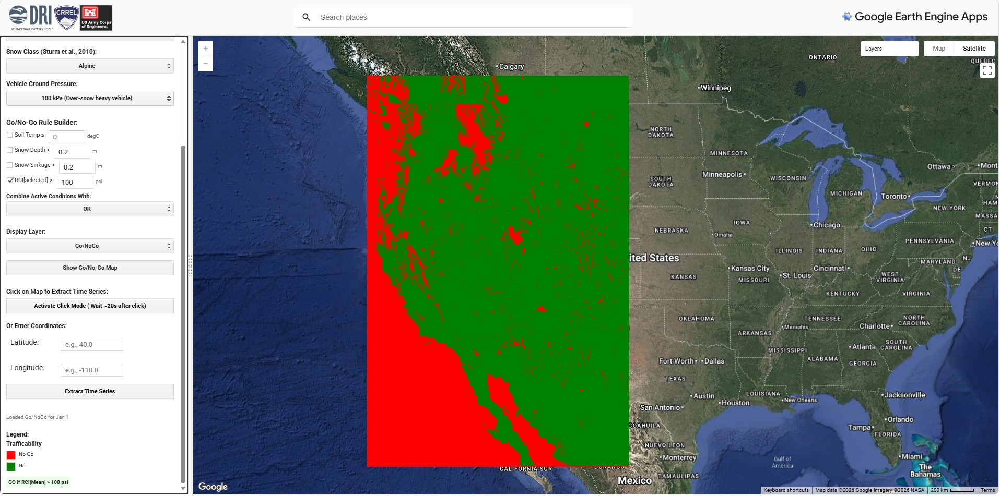
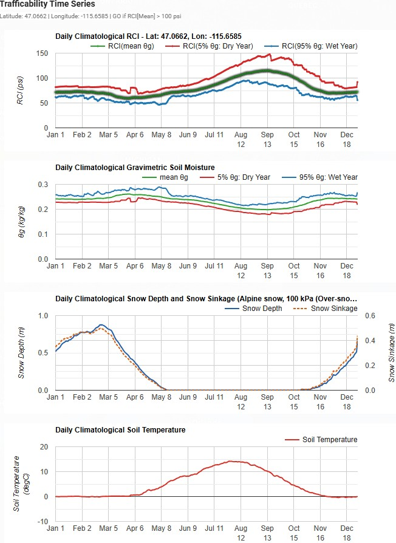

This article outlines the need, scientific context, application
design, key functions, and research impact of an analytical application
called Terrain Trafficability Explorer that provides daily
Go/No-Go terrain trafficability maps and time series from soil moisture
and temperature and snow depth. Terrain Trafficability Explorer is an
interactive Google Earth Engine application for assessing seasonal
ground trafficability across the western United States. It combines a
soil-texture-based Rating Cone Index (RCI), computed from Western Land
Data Assimilation System (WLDAS) climatological soil moisture and
per-texture-class bulk density, with snow depth, snow sinkage, and soil
temperature to classify daily Go/No-Go mobility conditions for any day
of the year. The application integrates NASA’s WLDAS soil moisture
climatology, obtained from Land Information System (LIS), and soil
texture maps to compute RCI. The application is designed for
high-resolution (1 km) hydrological and trafficability analysis, using
depth-weighted multi-layer soil moisture fields and texture-specific
empirical RCI equations.
Snow–soil interactions significantly influence soil freeze–thaw dynamics (Iwata et al., 2010; Jafarov et al., 2014), moisture availability (Haleakala et al., 2023), and vehicle mobility in snow-dominated regions (Albano et al., n.d.). Snowpacks act as thermal insulators, decoupling soil temperature from air temperature and reducing soil freezing during winter. This insulation effect (Ge & Gong, 2010) is particularly pronounced under deeper snowpacks, which limit the penetration of cold air into the soil and conduction of heat from soil into the snowpack. However, shallow or intermittent snow cover can lead to frequent freeze–thaw cycles (Rasouli et al., 2026), causing soil frost heave and destabilization, which degrade the structural integrity of soils and reduce their load-bearing capacity. The spatial variability of snow accumulation and melt further complicates soil conditions. Snowmelt infiltrates the soil unevenly due to factors such as topography, vegetation, soil freeze, and snow redistribution by wind (Flint et al., 2021). This results in heterogeneous soil moisture patterns, with wetter conditions persisting in areas of high snow accumulation or delayed melt (Rasouli et al., 2026). These wetter zones may experience reduced soil strength, increasing the risk of vehicle bogging or reduced traction. Conversely, drier areas with lower snow accumulation may exhibit compacted or frozen soils that can better support vehicle loads.
During spring, soil beneath melting snowpacks often becomes saturated due to snowmelt rates that exceed the infiltration capacity of the soil (Rasouli et al., 2026). The saturation reduces soil shear strength and increases the likelihood of rutting or surface deformation under vehicular loads. Additionally, changes in snowpack dynamics due to shifts in climate patterns, such as reduced snow cover duration and earlier melt (Rasouli et al., 2014), are expected to exacerbate these challenges by affecting the timing and extent of soil freeze–thaw cycles. Understanding these interactions is crucial for managing vehicle mobility in snow-dominated regions. Strategies such as timing vehicle operations to avoid peak thaw periods, improving drainage systems to mitigate waterlogging, and using vehicles with lower ground pressure can help minimize mobility issues caused by snow–soil dynamics.
High-spatial resolution soil moisture datasets obtained from land data assimilation systems, such as Western Land Data Assimilation System (WLDAS), offer detailed information on the daily evolution of water content in the soil column, but they are not directly translated into operational metrics of soil strength, trafficability, or ground mobility. WLDAS, developed by NASA’s Goddard Space Flight Center (Erlingis et al., 2021), focuses on the western United States. The system uses the NASA Land Information System (LIS) (Kumar et al., 2008; Peters-Lidard et al., 2007) and the Noah Multi-parameterization (Noah–MP) land surface model (Niu et al., 2011) to simulate snow and soil processes, downscaling the meteorological forcings obtained from the North American Land Data Assimilation System (NLDAS-2) (Mitchell et al., 2004) to compute snow accumulation and melt and soil moisture and temperature. Its high-resolution outputs can be used for contextualizing soil–snow interactions.
To apply the land surface model outputs to defense, emergency management, agricultural operations, and infrastructure planning, spatially explicit indices, such as Rating Cone Index (RCI) (Knight & Freitag, 1961; Sullivan & Anderson, 2000), is needed to capture how soil moisture and texture jointly influence soil strength and vehicle mobility under varying climatic conditions. Existing global land data assimilation system (GLDAS) and other regional data assimilation systems focus primarily on hydrological states and fluxes rather than application-ready mobility indices, creating a gap between climate data products and ground operations modeling.
The western United States experiences strong hydroclimatic gradients, snow and rain-on-snow events, and complex soil–landcover mosaics that lead to soil strength heterogeneity and challenges in trafficability. The presence or lack of snow cover is one of the primary variables that controls timing and spatial variability of water inputs to the soil as well as its temperature and freeze thaw cycles (e.g., Williams et al. (2009); Kormos et al. (2014); Harpold et al. (2014)). Our understanding of these snow–soil relationships in complex terrain and across elevational gradients is limited. Further, little work has been carried out to examine how accurately the commonly used atmospheric and land surface model outputs at various spatial resolutions depict these snow-soil relationships. A dedicated application that integrates WLDAS soil moisture climatology with soil texture maps to compute RCI provides an essential linkage between land surface modeling outputs and operational decision support for trail design, off-road mobility assessments, and climate variability impact studies on terrestrial accessibility.
Land surface models and data assimilation frameworks, such as GLDAS and LIS, integrate satellite observations, ground measurements, and atmospheric forcing to estimate soil moisture and related land surface states globally and regionally. NASA’s LIS provides soil moisture fields at ~3 km resolution using the Noah land surface model, with multiple vertical layers (0–200 cm) and climatological baselines derived from long-term integrations. WLDAS extends this approach to the western United States using Noah-MP 3.6 at 1 km spatial resolution, delivering daily soil moisture products suited to regional hydrology and drought monitoring. Parallel efforts, such as Soil Moisture Active Passive (SMAP) Level 4 Soil Moisture (L4_SM) and SMAP-derived land data assimilation systems, deliver 3-hourly, ~9 km soil moisture and total profile wetness fields with validated accuracies that meet mission requirements. However, most soil moisture products are disseminated in terms of volume fraction or percentiles, lacking explicit linkage to soil mechanical properties. Originally characterized by Knight & Freitag (1961), RCI provides a physically interpretable measure of soil strength for trafficability. Building on that work, Sullivan et al. (1997) derived empirical equations to predict RCI as a function of soil moisture content for specific soil texture classes.
Recent studies and data products emphasize soil moisture’s role in drought monitoring, wildfire danger monitoring, crop yield forecasting, and water resources management, but fewer applications translate these fields into mobility metrics that consider heterogeneous soil texture distributions from STATSGO/FAO’s 16-class soil texture scheme. The application detailed here builds on high-resolution WLDAS outputs and established empirical equations to bridge land data assimilation and ground operations modeling for a specific regional domain.
The insulating characteristics, low thermal conductivity, and high albedo of snow cover can affect soil thermal dynamics during winter. Friesen et al. (2021) assessed the influence of snow cover on soil temperature and frost depth in forested peatlands in Minnesota. They showed that snow removal led to increased soil frost depth and colder soil temperatures, while ambient snow cover insulated the soil, maintaining temperatures near or above 0°C. Thicker snowpacks provide better insulation, reducing soil freezing depths, while thinner or absent snowpacks expose soils to greater temperature fluctuations. The timing of snow accumulation and melt also significantly affects annual ground temperature, with thicker snow covers increasing mean annual soil temperatures by a few degrees (Bender et al., 2020). Fu et al. (2018) compared bare land, natural snow, compacted snow, and thick snow treatments and found that thicker and denser snow covers reduced soil temperature fluctuations during freezing periods. However, during melting periods, snowmelt infiltration increased soil moisture variability. This highlights the dual role of snow in insulating soils during winter and influencing water infiltration during thawing. Petersky & Harpold (2018) showed that ephemeral snowpacks (lasting <60 days) caused earlier soil moisture responses (by about 70 days) compared to seasonal snowpacks (lasting >60 days). Ephemeral snowpacks were more common at lower elevations and south-facing slopes, while seasonal snow dominated higher elevations. Climate change will likely increase ephemeral snowpack prevalence due to warming air temperatures and a shift in the phase of precipitation from snow to rain (Petersky & Harpold, 2018). The objectives of the developed application are to (1) understand the complex interactions between snow cover, snow depth, and soil moisture and strength and (2) visualize Go/NoGo conditions over space and during a normal, wet and dry year in a user-friendly web interface. To achieve this, we used WLDAS gridded datasets to accurately depict these interactions across the western United States. By addressing the objectives of this study, we aim to provide insight into safely moving across the landscape. This application can inform decisions in fields such as civil engineering, emergency response, and environmental management.
The WLDAS is a gridded dataset designed to support hydrological and environmental research and monitoring. WLDAS focuses on simulating water and energy budget variables for the western United States. The WLDAS is a high-resolution land data assimilation system tailored for the western United States, developed by NASA’s Goddard Space Flight Center (Erlingis et al., 2021). It integrates meteorological data, satellite observations, and land surface modeling to produce daily estimates of hydrological and energy budget variables, such as soil moisture, evapotranspiration, and groundwater recharge. Designed with water resource management in mind, WLDAS supports drought assessment and groundwater sustainability planning. Its outputs, spanning from 1980 through 2022, are invaluable for contextualizing extreme hydrological events like droughts and floods. The system simulates land surface processes and provides critical tools for water managers and stakeholders in the region.
The WLDAS estimated soil temperature and soil moisture for four soil layers of 0–10, 10–40, 40–100, and 100–200 cm. We used a depth-weighted average for the soil profile to estimate the RCI for different soil textures. The variations in soil texture cause site-specific conditions that influence terrain accessibility.
The application is based on four primary data streams: (1) soil texture classes, (2) daily soil moisture fields for four vertical layers, (3) daily soil temperature fields, and (4) daily snow depth. LIS Noah-MP input uses a 16-class soil texture map. The dominant soil texture class per grid cell is computed by taking the maximum over the 16-class texture fractions, then cropped and reprojected to the WLDAS western United States extent.
WLDAS soil moisture data are available as climatological GeoTIFFs for four depth ranges and daily time steps over a climatological year (DOY 1–366). Spatial resolution is 0.01° (~1 km), and temporal resolution is daily, allowing the construction of annual cycles of depth-integrated soil moisture and RCI.
| Soil Class | Soil Texture (USDA) | Soil Texture (USCS) | RCI Equation (Sullivan et al., 1997) | Bulk Density (g/cm3) |
|---|---|---|---|---|
| 1 | Sand | SP—few different particle sizes, little or no fines | exp [3.987 + 0.815ln (θg)] | 1.75 |
| 2 | Loamy Sand | SM—Silty gravels, gravel–sand–silt mixtures | exp [12.542 − 2.955ln (θg)] | 1.75 |
| 3 | Sandy Loam | SM—Silty gravels, gravel–sand–silt mixtures | exp [12.542 − 2.955ln (θg)] | 1.70 |
| 4 | Silt Loam | ML—Inorganic silts, slight to no plasticity | exp [11.936 − 2.407ln (θg)] | 1.45 |
| 5 | Silt | ML—Inorganic silts, slight to no plasticity | exp [11.936 − 2.407ln (θg)] | 1.42 |
| 6 | Loam | CL—Inorganic clays, low to moderate plasticity | exp [15.506 − 3.530ln (θg)] | 1.55 |
| 7 | Sandy Clay Loam | SC—Clayey gravels, gravel–sand–clay mixtures | exp [12.542 − 2.955ln (θg)] | 1.65 |
| 8 | Silty Clay Loam | CL—Inorganic clays, low to moderate plasticity | exp [15.506 − 3.530ln (θg)] | 1.42 |
| 9 | Clay Loam | CL—Inorganic clays, low to moderate plasticity | exp [15.506 − 3.530ln (θg)] | 1.50 |
| 10 | Sandy Clay | SC—Clayey gravels, gravel–sand–clay mixtures | exp [12.542 − 2.955ln (θg)] | 1.60 |
| 11 | Silty Clay | CH—Inorganic clays, high plasticity, fat clays | exp [13.686 − 2.705ln (θg)] | 1.40 |
| 12 | Clay | CH—Inorganic clays, high plasticity, fat clays | exp [13.686 − 2.705ln (θg)] | 1.40 |
| 13 | Organic Material | OH—Organic clays, high plasticity, fat clays | exp [12.189 − 1.942ln (θg)] | 1.20 |
| 14 | Water | 0 | 1.00 | |
| 15 | Bedrock | exp [3.987 + 0.815ln (θg)] | 1.80 | |
| 16 | Other (land-ice) | exp [3.987 + 0.815ln (θg)] | 1.20 |
We converted volumetric soil water content to gravimetric soil moisture content as follows:
θv = vwater/vsoil = (mwater/ρwater)/(msoil/ρsoil) = (θsoil)/ρwater
where θv is volumetric water content, which is the volume of liquid water per volume of soil, and θg is gravimetric water content, which is the mass of water per mass of dry soil. It is measured by weighing a soil sample (mwet), drying the sample to remove the water, and then weighing the dried soil (mdry). The density of water is close to 1000 kg/m3 and often ignored. Soil bulk density (ρbulk) is used for ρsoil. Soil bulk density is the ratio of soil dry mass to sample volume (Table 1) and was obtained from Morris & Lowery (1988).
Terrain Trafficability Explorer is an interactive Google Earth Engine application for assessing seasonal ground trafficability across the western United States. It combines a texture-based RCI, computed from WLDAS climatological soil moisture and per-texture-class bulk density, with snow depth and soil temperature to classify daily Go/No-Go mobility conditions for any day of the year (1–366). The Terrain Trafficability Explorer application generates maps that illustrate spatial variability of climatological soil moisture, soil temperature, frozen and unfrozen areas, snow depth, snow sinkage, and RCI for each day of the year for the western United States (Figure 1). The application, accessible through the link https://rci-nwus.projects.earthengine.app/view/drivemud, implements a depth-weighted soil column moisture calculation by assigning each WLDAS layer a thickness (10, 30, 60, 100 cm) and computing a weighted average soil moisture fraction across the 0–200 cm profile, normalized by total depth. The full 2 m soil profile was used to represent antecedent and root-zone wetness, including deeper moisture storage that may not be captured by the upper two layers alone. Although near-surface moisture strongly controls immediate traction and rutting, heavy vehicle loads can transmit stress into the subsoil. Therefore, the integrated profile provides a more stable indicator of overall soil load-bearing conditions and reduces sensitivity to short-lived surface wetting or drying. The resulting volumetric fraction is converted to gravimetric soil moisture content (kg/kg) and combined with the dominant soil texture class per pixel to evaluate texture-specific RCI equations (Table 1). Data assets contain WLDAS GeoTIFFs (soil moisture (four layers and entire soil profile average) and soil temperature (top 10 cm soil layer), and snow depth), soil texture maps, and RCI GeoTIFFs.

Snow sinkage, defined as the vertical penetration of a vehicle’s tire or track into a snowpack under load (Richmond et al., 1995), is a critical parameter for predicting off-road mobility in winter and high-elevation terrain. Sinkage is most commonly estimated using a Bekker-type pressure–sinkage relationship, expressed as P = (kcb + k∅)zn, where P is the applied ground pressure, kc and k∅ are the cohesive and frictional deformation moduli of the snowpack, b is the contact width, z is sinkage depth, and n is an empirically derived sinkage exponent that captures the nonlinear compressibility of snow. Because snow is far more compressible than mineral soil, the relationship between pressure and sinkage is markedly nonlinear at low densities (below roughly 500 kg/m3), requiring density- and depth-dependent calibration of these coefficients rather than assuming soil-like linear elastic patterns. The U.S. Army Cold Regions Research and Engineering Laboratory’s Shallow Snow Mobility Model (Richmond et al., 1995) formalizes this by computing final sinkage (zf) as a function of fresh snow depth and the ratio of snow density on DOY day of year to maximum compacted snow density, zf = h0(1 − ρDOY/ρf), allowing sinkage to be estimated from readily observable snow depth and density inputs rather than direct field penetrometer testing (Richmond et al., 1995; Shoop et al., 2020). Snow density itself is the dominant control on trafficability outcomes, with the most difficult mobility conditions occurring in the 0.3–0.4 g/cm3 range, since snow above approximately 0.5 g/cm3 produces little to no vehicle sinkage and behaves more like a supportive surface. Final snow density after sinkage can be estimated based on the ground pressure (Pmax), typically ranging from 210 kPa to over 700 kPa for tracked vehicles, using the following equation (Shoop et al., 2020):
ρf = min(0.917, 0.519 + 0.0023Pmax)1000
and
ρDOY = (ρmax − ρ0)[1 − exp(−k1 × hDOY − k2 × DOY] + ρ0
where ρDOY, hDOY, k1, and k2 are snow density, snow depth, and densification parameters for day of year (DOY), respectively; ρmax, ρ0, k1, and k2 vary with snow class and are 0.5975, 0.2237, 0.0012, and 0.0038 for the alpine snow class, respectively. DOY runs from −92 (1 October) to +181 (30 June), with no 0 value, 32 for 1 February and −47 for 15 November (Sturm et al., 2010; Sturm & Liston, 2021). For applications integrating land surface model outputs, such as WLDAS snow outputs, sinkage estimation typically substitutes gridded snow depth and modeled density as inputs to these empirical pressure-sinkage equations, enabling spatially distributed mobility and RCI-style trafficability mapping without requiring in situ cone penetrometer measurements at every location.
The workflow proceeds in three stages. First, WLDAS input NetCDF files are called from Climate Engine (Huntington et al., 2017) to Google Earth Engine and their climatological daily maps of soil moisture at four layers, soil temperature at the top 10 cm layer, and snow depth for each day of year are calculated using Google Cloud Computing. Climate Engine was used to access and process the underlying gridded datasets in Google Earth Engine and to generate daily climatological maps for the study variables over the selected reference period. Its cloud-based framework enabled consistent day-of-year aggregation, spatial subsetting, visualization, and export without requiring local storage or processing of the complete data archive. The soil texture variable is extracted, and missing values are handled, terrain-aligned latitude/longitude grids define affine transforms, and the dominant soil texture map is generated and optionally stacked into 16-band soil texture fraction GeoTIFFs. Second, dominant soil texture map is cropped and reprojected to the WLDAS soil moisture extent using the WLDAS GeoTIFFs as reference. The nearest-neighbor resampling preserves categorical texture codes, producing western United States soil map with dominant texture classes. Third, for each day of year, the four WLDAS soil moisture layers are ingested, and depth-weighted average soil moisture is computed across all layers. The soil texture raster is aligned to the WLDAS grid once, then reused across days as a reference array of texture class codes. For each pixel, the application identifies the texture class (1–16) and applies the corresponding RCI equation derived from Sullivan et al. (1997) (Table 1). RCI is computed as exp(a + b × ln(θg)) for classes with defined coefficients, with class 14 treated as RCI = 0 to represent non-soil or water surfaces.
Key functions read WLDAS and texture GeoTIFFs and return data arrays with metadata and reproject the soil texture map onto the WLDAS grid using nearest-neighbor resampling and WLDAS coordinate reference system definitions. Two other functions apply depth-weighted aggregation across the four soil layers and evaluates the texture-specific RCI equations per pixel. The RCI coefficients are stored in a mapping of texture class IDs (1–16) to parameters a and b. For each class, the RCI function computes ln(θg), then calculates RCI via exp(a + b × ln(θg)). Masks are used to apply each class’s equation to only the corresponding subset of pixels, enabling efficient vectorized computation for large grids.
Within the processing loop, the application operates on daily climatological soil moisture GeoTIFFs for day of year, ensuring that each day’s four layers correspond to the same spatial grid and coordinate reference system. The depth-weighted moisture function assumes volumetric soil moisture values between 0 and 1, and valid pixel masks exclude values outside this range when computing statistics. The soil texture raster is assumed to contain integer codes 1–16 representing texture classes used in LIS Noah-MP runs and was accessed from the website https://portal.nccs.nasa.gov/datashare/WLDAS_css/wldas_domain/. Asset paths are parameterized in the configuration section of the Application’s main JavaScript so that one can point the application to different climatology folders or texture maps.
Users can toggle between climatological mean, dry (5th percentile), and wet (95th percentile) soil-moisture and RCI conditions, adjust the RCI threshold used for the Go/No-Go rule, and click anywhere on the map to generate a full annual time series of RCI, gravimetric soil moisture, snow depth, and soil temperature at that location. The tool is designed to support field logistics planning, off-road mobility assessment, and seasonal terrain-access predictability.
How to Use This Tool. The following steps need to be taken to visualize and analyze the soil strength and trafficability (Figure 1):
Move the date slider to pick a day of the year (1–366).
Choose a display layer: RCI (mean/dry/wet), gravimetric soil moisture (mean/dry/wet), snow depth, soil temperature, frozen soil, or Go/No-Go.
Set the RCI threshold (pounds per square inch, psi) and pick which RCI percentile (mean, 5th, or 95th) drives the Go/No-Go classification.
Click “Show Go/No-Go Map” for the full trafficability map.
Click any point on the map (or enter manually the latitude and longitude of interest) to plot a full 366-day climatology of RCI, soil moisture, snow depth, soil temperature, and Go/No-Go at that location.
Go/No-Go Rule. The rules for Go (passable terrain) and No-Go (impassable terrain) can be customized by the user. For instance, it can be as follows: GO if soil is frozen (≤ 0 ℃), OR if the selected RCI percentile exceeds the threshold AND snow depth is below 0.20 m. Upon selecting a point of interest, a multi-panel figure shows daily soil profile average RCI, soil moisture, soil temperature, snow depth, and Go/NoGo status as continuous time series (Figure 2). These plots provide intuitive insight into how soil strength varies across the hydrological year.

Spatial visualizations include static maps from individual RCI GeoTIFFs for selected DOYs, revealing spatial gradients in soil strength linked to underlying soil texture patterns and moisture anomalies. These maps can be layered with landcover, elevation, and transportation networks in GIS software to explore terrain trafficability, identify potential bottlenecks for ground operations, and evaluate mitigation strategies.
The application advances the integration of land data assimilation outputs with operational metrics of soil mechanics by combining WLDAS multi-layer soil moisture fields, soil texture maps, and empirically derived RCI equations into a unified, reproducible workflow. It demonstrates how high-resolution soil moisture climatology can be transformed into physically interpretable indicators of soil strength, suitable for land management, military mobility planning, and climate adaptation studies.
From a hydrological research perspective, the framework allows systematic exploration of how soil texture heterogeneity modulates the sensitivity of rating cone index to moisture variations across space and time. It can be extended to climate change scenarios by forcing WLDAS or LIS Noah-MP integrations with downscaled GCM projections, yielding projections of future trafficability under altered precipitation, snowpack, and evapotranspiration regimes. The texture-specific RCI equations derived from Sullivan et al. (1997) provide an empirically grounded basis for translating soil moisture into soil strength, enabling comparative analyses across soil classes and quantifying the relative vulnerability of different soil units to strength loss under wetting.
In the broader context of land surface modeling and Earth observation, this application illustrates how vertical resolution (0–200 cm) soil moisture products can be combined with static soil property maps to produce derived indicators that directly support operational decision making. It thus contributes a template for similar integrations that couple SMAP L4_SM or GLDAS-2.2-based soil moisture products with soil mechanical metrics, expanding the usage of soil moisture climatologies beyond drought monitoring into terrain accessibility and resilience planning.
The western United States-focused RCI application provides a scalable, extensible platform that can be replicated for other regions and datasets, using existing NASA land data assimilation systems and LIS infrastructures and the growing ecosystem of high-resolution soil moisture products. By clearly structuring data inputs, methods, asset paths, and visualization outputs, it facilitates both operational deployment and academic research on the coupled dynamics of soil moisture, texture, and ground mobility.
The source codes and data assets of the application can be accessed using the link below.
Link : https://crushftp.dri.edu/?u=Me784PuX&p=ZyGRJ62U
Permanent link to access source codes: https://github.com/krasouli/TerrainTrafficabilityExplorer
The authors used Claude and Grammarly to assist with adding multiple display layers to the application and checking grammar. All content has been reviewed and revised by the authors. The authors take full responsibility for the accuracy and originality of the work.
This material is primarily supported by the Broad Agency Announcement Program and Cold Regions Research and Engineering Laboratory (ERDCCRREL) under Contract No. W913E523C0002 and The Regents of the University of California. Any opinions, findings, and conclusions or recommendations expressed in this publication are those of the author(s) and do not necessarily reflect the views of the ERDCCRREL or of The Regents of the University of California.